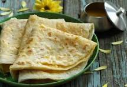

Puran Poli

Puran Poli is a traditional Indian sweet flatbread, popular especially during festivals and special occasions. It is made by stuffing a soft wheat flour dough with a sweet filling of cooked lentils, jaggery, and aromatic spices like cardamom and nutmeg. The result is a delicious, melt-in-the-mouth treat that is enjoyed by people of all ages.
This dish is often served with a dollop of ghee and sometimes accompanied by milk or katachi amti (spiced lentil soup). Puran Poli is cherished for its unique combination of flavors and textures, making it a festive favorite in many Indian households.
Ingredients
- Chana dal (split Bengal gram)
- Jaggery (or sugar)
- Whole wheat flour
- Cardamom powder
- Nutmeg powder (optional)
- Ghee (clarified butter)
- Salt
- Water
Steps
- Cook chana dal until soft, then drain and mash it well.
- In a pan, combine mashed dal and jaggery. Cook until the mixture thickens, then add cardamom and nutmeg powder. Let it cool.
- Prepare a soft dough using whole wheat flour, a pinch of salt, water, and a little ghee. Let it rest for 20 minutes.
- Divide the dough and the sweet filling into equal portions.
- Roll out a dough ball, place the filling in the center, and seal the edges. Gently roll it out into a flat disc.
- Cook the poli on a hot griddle, applying ghee on both sides, until golden brown spots appear.
- Serve warm with extra ghee on top.
Home